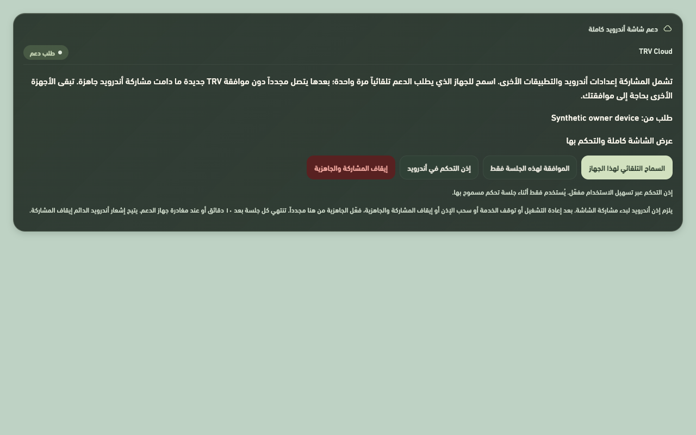
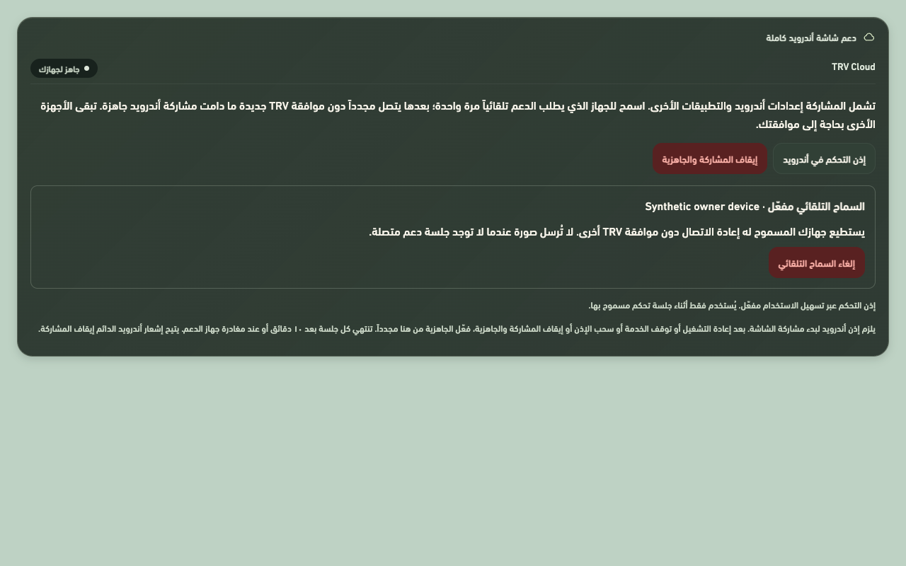

TRV CLOUD
اسمح لجهازك مرة.
واتصل مجدداً تلقائياً.
فعّل السماح التلقائي لجهاز الدعم المخوّل عبر TRV Cloud من الشاشة. بعدها يعيد الجهاز نفسه الاتصال دون موافقة TRV جديدة، ما دامت مشاركة أندرويد التي وافقت عليها مستمرة وجاهزة.
تنزيل تحديث TRV 3.5.34ملف APK لأندرويد · ثبّته كتحديث فوق النسخة الحالية.
الإعداد من الشاشة مرة واحدة
الإعدادات ← الاتصال ← دعم شاشة أندرويد كاملة.

جاهز لجهازك المسموح
تُحفظ هوية جهاز الدعم المخوّل. تبقى الأجهزة الأخرى بحاجة إلى موافقتك.

بعد إعادة التشغيل
أندرويد يطلب إذن مشاركة الشاشة عند بدء الالتقاط. إعادة تشغيل الشاشة أو توقف الخدمة أو سحب الإذن أو إيقاف المشاركة والجاهزية ينهي جاهزية الالتقاط. يبقى الجهاز محفوظاً؛ اضغط «تفعيل الجاهزية» محلياً ووافق على إذن أندرويد مجدداً. هذه الإضافة لا تتجاوز أذونات النظام.
ما يبقى محفوظاً ومحمياً
يلزم اتصال TRV Cloud وتفويض صالح للجهاز نفسه؛ السماح التلقائي لا ينشئ تفويضاً لأي جهاز آخر. تبقى صفحات الأذونات والتثبيت والقفل وكلمات المرور محمية من النقر والكتابة عبر الدعم.
جلسة دعم واضحة
العرض حتى صورة واحدة في الثانية، دون تسجيل. تنتهي الجلسة بعد ١٠ دقائق أو عند مغادرة جهاز الدعم، ويتوقف العرض والتحكم عند انتهاء مهلة الاتصال البالغة ١٥ ثانية. يظهر إشعار أندرويد دائم لإيقاف المشاركة.
الموافقة لجلسة واحدة
يبقى خيار الموافقة لكل جلسة متاحاً. إذا وافقت على جلسة منفردة أثناء الجاهزية التلقائية، تتوقف الجاهزية السابقة مؤقتاً؛ فعّلها مجدداً بعد انتهاء تلك الجلسة.